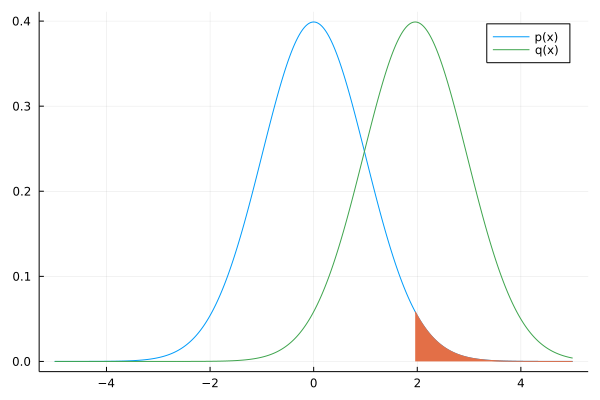
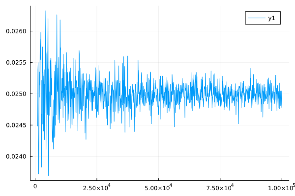

今年の7月くらいに書き始め、存在をすっかり忘れていた記事をUP。
モンテカルロ法でどうやって積分計算をするのか、重点サンプリングとはどのようなものなのかついて勉強したので、そのメモ。
一般論
$$
\begin{aligned}
\int_{\Omega_0} f(x) dx
&= \int_{\Omega_0} \frac{f(x)}{p(x)}p(x)dx\\
&= \mathbb{E}\left[\frac{f(x)}{p(x)}\right]
\end{aligned}
$$
ここで、$p$ は確率密度関数。上の $\mathbb{E}$ が期待値であるためには、
$$
\int_{\Omega_0} p(x) dx = 1
$$
である必要がある。
大数の法則より、確率分布 $p$ に従う 標本 $x_n\ (n = 1, 2, \ldots, N)$ に対して、$N$ が十分大きければ、
$$
\mathbb{E}\left[\frac{f(x)}{p(x)}\right]
\simeq \frac{1}{N} \sum_{n=1}^{N} \frac{f(x_n)}{p(x_n)}
$$
となるから、結局、
$$
\begin{aligned}
\int_{\Omega} f(x) dx \simeq \frac{1}{N} \sum_{n=1}^{N} \frac{f(x_n)}{p(x_n)}
\end{aligned}
$$
と近似できる。
ちなみに、$p(x_n) = 0$ なる $x_n$ が選ばれることは絶対に無い(確率0だから)。よって分母が0になることを心配する必要はない。
定義域を広げる
$p$ の定義域をもう少し広げられる。$\Omega \supset \Omega_0$ であれば、集合$A$に関する指示関数を $\bm{1}_A$ と書くことにして、
ここで、$p$ は確率密度関数。上の $\mathbb{E}$ が期待値であるためには、
$$
\int_{\Omega} p(x) dx = 1
$$
である必要がある。$\Omega_0$ より少し広い $\Omega$を使うことができるようになった。そして、
$$
\begin{aligned}
\int_{\Omega} f(x) dx \simeq \frac{1}{N} \sum_{n=1}^{N} \bm{1}_{\Omega_0}(x_n) \frac{f(x_n)}{p(x_n)}
\end{aligned}
$$
と近似できる。
領域上の積分
領域 $\Omega_0$ の体積を $V$ とする。
$p$ は $\Omega \supset \Omega_0$ 上の一様分布に従うとする。$\bm{x} \in \Omega$ について $p(\bm{x}) = \frac{1}{V}$ であるから、
$$
\begin{aligned}
\int_{\Omega} f(\bm{x}) d\bm{x} \simeq \frac{V}{N} \sum_{n=1}^{N} \bm{1}_{\Omega_0}(\bm{x}_n) f(\bm{x}_n)
\end{aligned}
$$
例: 円周率の近似
よくある円周率の近似の手法をきちんと数式で表してみる。
$\bm{x} = (x_1, x_2)$、$C = \{ \bm{x} \mid x_1 \ge 0, x_2 \ge 0, x_1^2 + x_2^2 \le 1 \}$ とする。
$C$ は原点 $(0, 0)$、半径 $1$ の円内部について、その第1象限の部分だけを表す。$C$の面積は以下のように計算できる。
$$
\begin{aligned}
\int_{c} 1 d\bm{x} \simeq \frac{1}{n} \sum_{n=1}^{n} \bm{1}_{c}(\bm{x}_n) \frac{1}{p(\bm{x}_n)}
\end{aligned}
$$
まず、左辺は円の面積の $\frac{1}{4}$ であるから、$\frac{1}{4} \pi \cdot 1^2 = \frac{\pi}{4}$である。
右辺について考える。$D = \{ \bm{x} \mid 0 \le x_1 \le 1, 0 \le x_2 \le 1 \}$ とする。
このとき、$D \supset C$ が成り立っていることに注意する。
$D$上の一様乱数を考えると、確率密度関数は $p(\bm{x}) = 1\ (\bm{x} \in D)$ である。
以上より、次のように近似できる。
$$
\begin{aligned}
\pi \simeq \frac{4}{n} \sum_{n=1}^{n} \bm{1}_{c}(\bm{x}_n)
\end{aligned}
$$
円周率の近似 - Juliaによる実装
function monte_carlo_pi(N)
xs = rand(Float64, (N, 2))
rs = xs[:, 1].^2 .+ xs[:, 2].^2
4 * count(rs .<= 1) / length(rs)
end
N=10^7くらいになるとようやく小数以下3桁まで一致する。
julia> monte_carlo_pi(10000000)
3.1417248
確率分布の統計量を計算する
例えば、ある確率分布の密度関数を $p$ とし、その期待値を求めることを考える。モンテカルロ法により、
$$
\begin{aligned}
E[X] &\simeq \frac{1}{N} \sum_{n=1}^{N} x_n
\end{aligned}
$$
と計算できる。ただし、$x_n$は確率密度関数が$p$であるような分布から生成された乱数。
別の確率分布の乱数を使って期待値を求めたいなら、次のように式変形する。
$$
\begin{aligned}
E[f(X)]
&= \int f(x)p(x) dx \\
&= \int \frac{f(x)p(x)}{q(x)}q(x) dx \\
&= \mathbb{E} \left[ \frac{f(x)p(x)}{q(x)} \right] \\
&\simeq \frac{1}{N} \sum_{n=1}^{N} \frac{f(x_n)p(x_n)}{q(x_n)}
\end{aligned}
$$
ただし、$x_n$ は確率密度関数が $q$ であるような分布から生成された乱数。
このように、$p$からではなく$q$からサンプリングして求めることができる。
これは重点サンプリングとして知られている。
正規分布の裾の計算
以下の積分値を計算してみる。ただし、$p(x)$は$\mathcal{N}(0, 1)$に従うものとする。
$$
\int_{1.96}^{\infty} p(x) dx
$$
有名な事実であるが、この積分は約$0.25$であることが知られている。
つまり、$x \ge 1.96$ となる確率は$2.5\%$ということである。
これは次のように期待値に変形できる。ただし、$A = [1.96, \infty)$とする。
$$
\begin{aligned}
\int_{1.96}^{\infty} p(x) dx
&= \int_{-\infty}^{\infty} 1_A(x) p(x) dx\\
&= E[1_{A}(X)]
\end{aligned}
$$
先ほど説明した重点サンプリングの手法に沿って、さらに変形する。
$$
\begin{aligned}
E[1_{A}(X)]
\simeq \frac{1}{N} \sum_{n=1}^{N} \frac{1_{A}(x_n)p(x_n)}{q(x_n)}
\end{aligned}
$$
この$q$をどんな分布にするかだが、なるべく領域$A$をサンプリングしやすいようなものを選ぶ。
ここでは$q$は$\mathcal{N}(1.96, 1)$に従うものとする。下図のように、領域$A$(オレンジ)の近くに$q$の分布が集まっているから、$1_{A}(x_n)$で$0$になり辛く効率良くサンプリングでき、値の収束も速くなる。

積分値の計算をJuliaで実装すると以下の通り。サンプル数を増やして値が収束していくところをみたいので、グラフに描画してみる。
using Random, Distributions
using Plots
function monte_carlo(N)
dist_p = Normal(0, 1)
dist_q = Normal(1.96, 1)
xs = rand(dist_q, N)
ys = xs[xs .>= 1.96]
sum(pdf.(dist_p, ys) ./ pdf.(dist_q, ys)) / N
end
function main()
ns = 1000:100:100000
xs = monte_carlo.(ns)
plot(ns, xs)
end
$N$を増やしていくと、積分値は$0.25$に近づくことが分かる。
